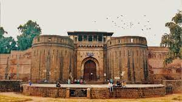
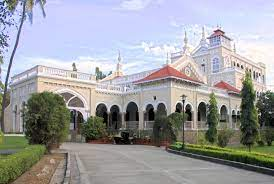
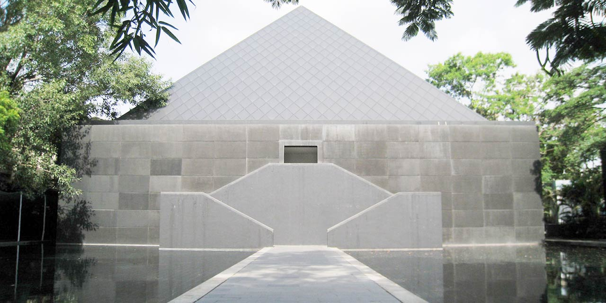

Shaniwar Wada
Shaniwarwada, once the seat of the Peshwa governance in Pune is a 286-year-old mansion and is one of the finest examples of architecture in the city.

Aga Khan Palace
The mighty edifice of Aga Khan Palace is situated in Pune and was built by Sultan Muhammed Shah Aga Khan III in the year 1892. It is one of the most important landmarks in Indian history and has been instrumental

Osho Ashram
Osho Ashram, located at Koregaon Park in Pune, is a place known for its serenity and surreal practices of meditation and love to achieve divinity.